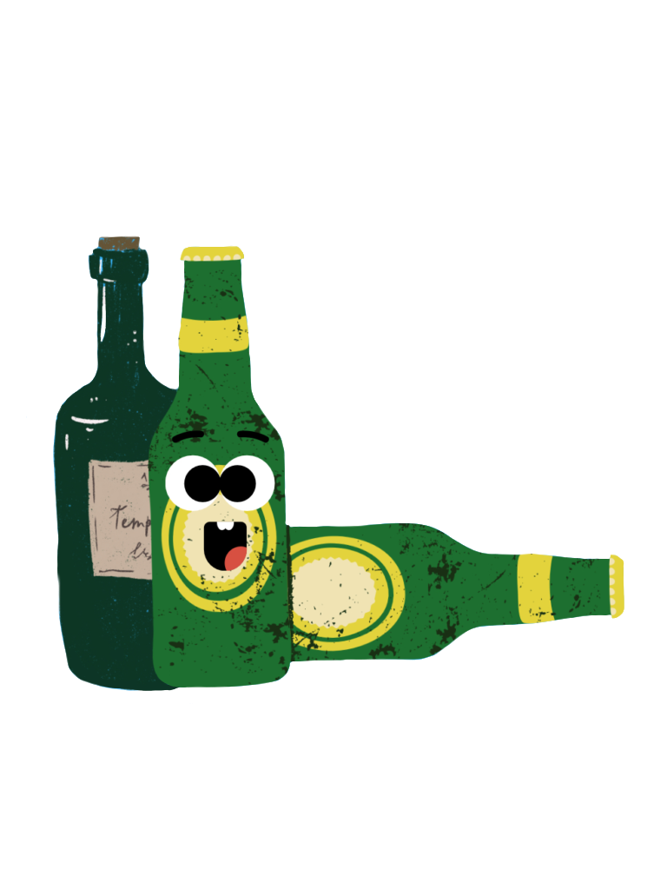
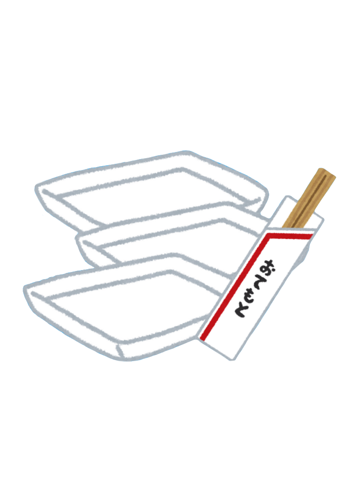
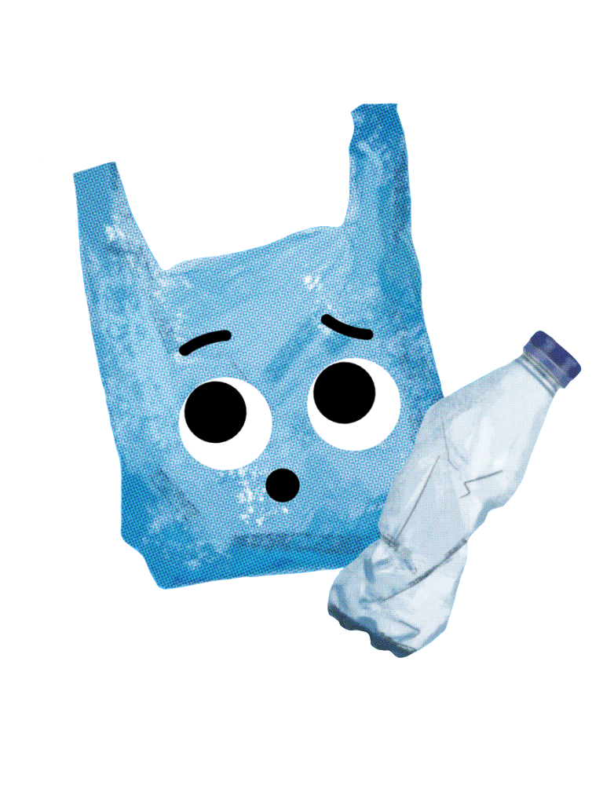
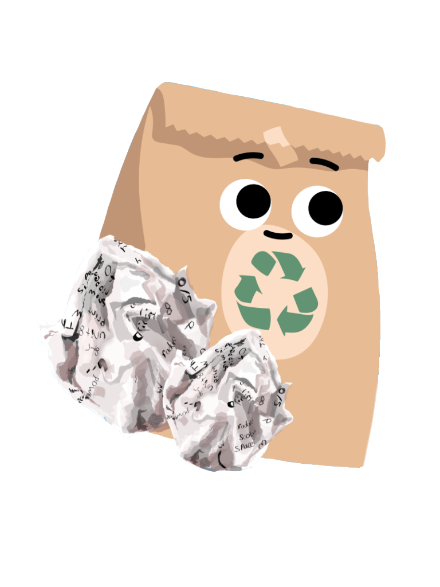
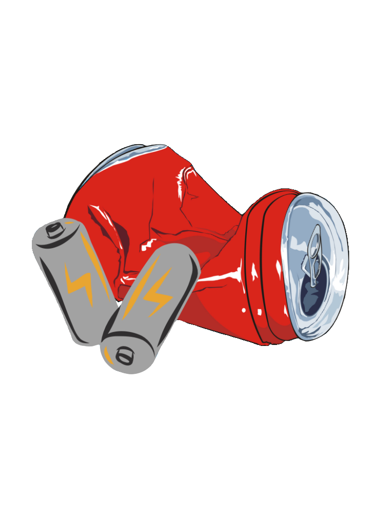
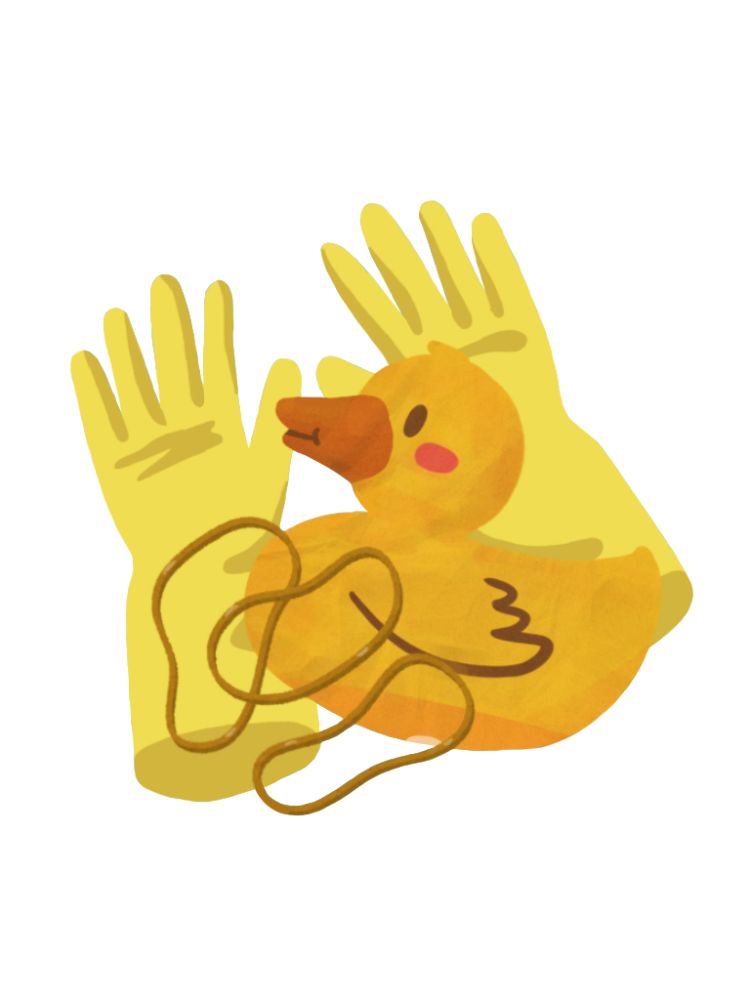

我是玻璃！像是酒瓶、玻璃杯都是我的家人，我們不容易被自然分解，能夠在世界上存在幾百年甚至是幾千年！除了在海洋中，你最常能在沙灘中看到我們的身影。

我是保麗龍！像是免洗餐具、漁業用品都是我的家人，我們的自然分解時間是幾百年或幾千年，不過！如果我們曝曬在太陽光底下的話，能夠加速分解時間。

我是塑膠！像塑膠袋、寶特瓶都是我的家人，全球每年平均會有1270萬噸的塑膠垃圾倒入海洋當中，在海洋垃圾中約佔85%！而且我們自然分解的時間很久，像是塑膠袋就需要花費200-1000年才能被分解。

我是紙類！像是紙袋、鋁箔包都是我的家人，我們的自然分解時間很短，只有幾星期到幾個月，但在分解過程中，有塗層或者是含有化學物的紙張，可能會釋放有害物質，對海洋生態造成影響。

我是布料與尼龍！像衣物、尼龍繩是我的家人。根據世界動物保護協會的數據，每年約有60萬噸的漁具被丟棄到海洋中，其中包括尼龍漁網。我們需要大約30-40年或是更久才能被自然分解。

我是金屬！像電池、工廠排放的重金屬污染都是我的家人。鐵、鋁、錫的自然分解時間為幾百年之久。重金屬污染進入生物體後不容易被排除及分解，通常會經由食物鏈逐漸的累積，而對生物及人類造成危害。

我是橡膠！像橡膠玩具、橡皮筋都是我的家人。我們在海洋中的自然分解時間為50-80年，甚至有可能更久，我們分解緩速的原因有3點，1.化學穩定性、2.環境條件、3.缺乏微生物分解。
 海洋消消樂
海洋消消樂